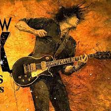

A Brief History of R&B Music:
In the 1940s, R&B music exploded in urban centers like New York, Chicago, Detroit, Philadelphia, and Los Angeles—all of which had seen increased Black American presence due to the Great Migration.
1. Roots in southern church music:
Many musicians steeped in blues and Black American church music brought new songs from the south, and eventually secured recording contracts in northern cities. Their music emphasized electric guitars, double bass, piano, and drum sets.
2. R&B meets rock ‘n’ roll:
The genre’s early stars were simultaneously categorized as R&B and rock ‘n' roll. These included James Brown, Fats Domino, and Little Richard. Chicago’s Chess Records promoted R&B singers who crossed over into blues such as Bo Diddley and Chuck Berry, both of whom were also categorized rock performers. In the 1950s, R&B still shared nearly all its musical characteristics with rock ‘n’ roll, yet both genres took on racial connotations as a result of widespread segregation. In the 1950s and ’60s, nearly all white artists playing blues-based pop music were categorized as rock ‘n’ roll; meanwhile, most Black musicians playing songs with the same influences were branded R&B artists.
3. R&B deviated from rock in the 1960s:
Crooners like Etta James and Sam Cooke brought a smoother veneer to pop music while white rockers pushed toward heavier sounds and psychedelic experimentation. R&B began to share more commonalities with the burgeoning genre of soul music. In Detroit, soul label Motown Records produced a commercially polished sound centered around glamorous singers and propulsive rhythm sections. In Memphis, Stax Records merged southern blues with soulful crooning from the likes of Otis Redding and Carla Thomas.
4. R&B evolved further in the ’70s:
R&B musicians began experimenting with syncopated rhythms and more Afrocentric lyrical content in the 1970s. Artists such as Isaac Hayes and the Reverend Al Green mixed church music, African rhythms, and expanded instrumentation into R&B, leading to the development of funk and disco.
5. Smooth R&B:
In recent decades, R&B music pushed away from guitars and toward a smooth sound geared toward dance clubs and urban radio. R&B vocalists like Toni Braxton, Mariah Carey, Michael Jackson, Janet Jackson, Boyz II Men, TLC, Usher and Lauryn Hill racked up hits and Grammys by emphasizing melismatic, soulful singing and catchy melodies. Beyoncé, Drake, and Mary J. Blige have pushed the rhythmic boundaries of R&B by collaborating with rappers and electronic producers.
The present-day R&B scene has changed notably from that of the 1950s and 1960s, yet it remains one of the most popular genres in American music.